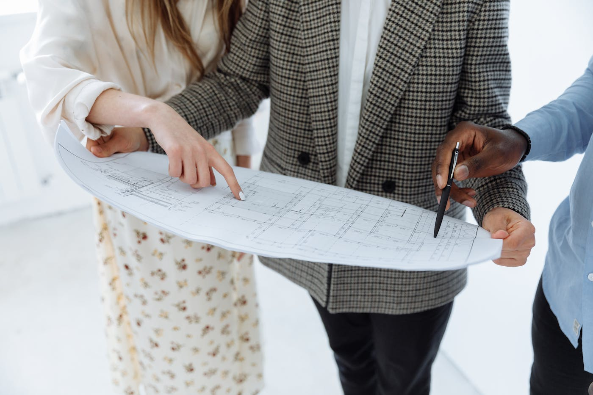
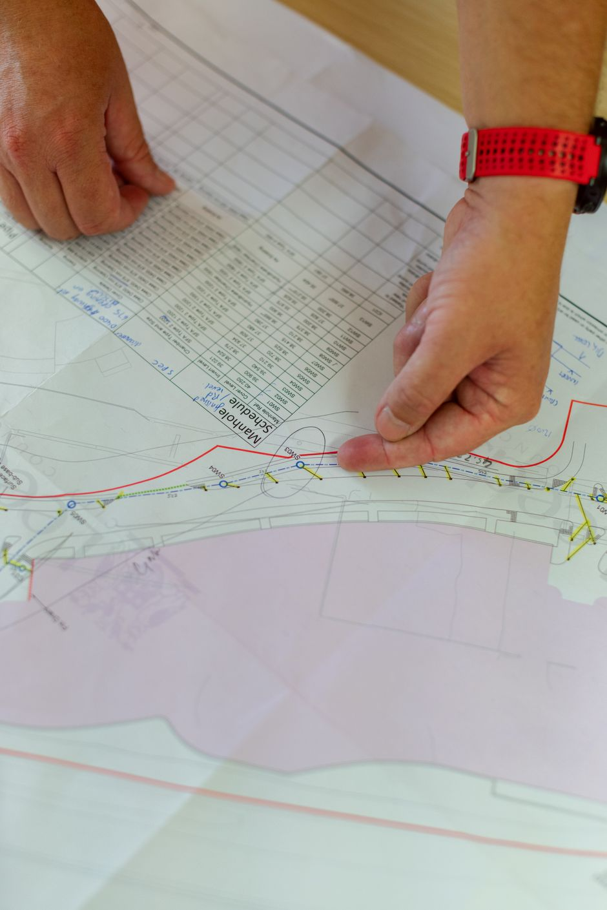
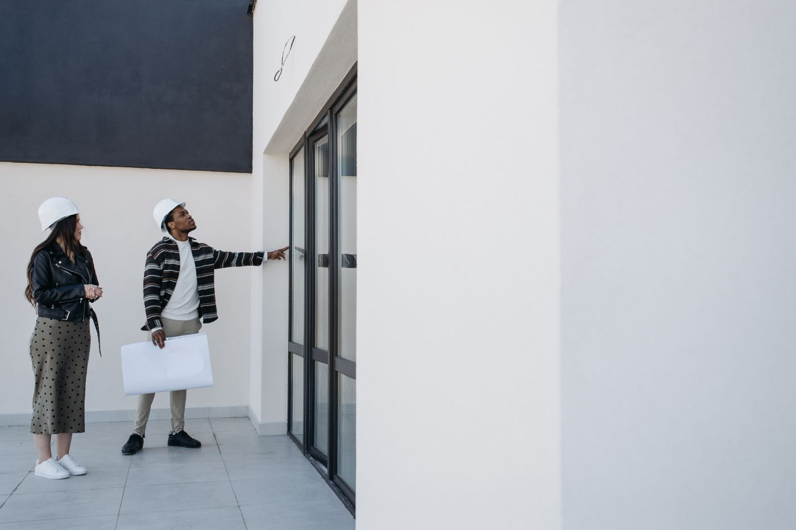

Quick answer: Builder plans in NSW refers to two related things: the floor plan designs project builders offer from their catalogue, and the full set of construction drawings required for a building approval. All residential construction in NSW requires either a Development Application (DA) or a Complying Development Certificate (CDC) — the drawings you submit determine which path is available. Custom builds in Sydney start at approximately $3,200 per m² for construction in 2026. A complete plan set includes architectural drawings, structural engineering, a BASIX certificate, and a stormwater plan — a floor plan alone is not enough to start building.
In the building industry, “builder plans” operates a bit like “natural” on a food label — it means something different depending on who is selling it and what they want it to mean. The project builder uses it to describe a floor plan catalogue. The certifier uses it to mean a full set of construction drawings. The subcontractor uses it to mean whatever was emailed to him last Tuesday.
[Right. Straight face now.] Here is what builder plans actually means in NSW, what a proper set must contain, how the two main approval paths work, and what the price looks like once all the line items are on the table.
- What are builder plans?
- Project home plans vs custom plans
- What a proper plan set must include in NSW
- Getting your plans approved: DA vs CDC
- What builder plans and custom builds cost in Sydney
- What project home plans often leave out
- BASIX: the NSW energy requirement most plans need to satisfy
- When NOT to use a builder’s standard plans
- Six questions to ask about your builder’s plans
- FAQ
What Are Builder Plans?
Builder plans in NSW covers two distinct things that get bundled under the same phrase.
The first is the floor plan designs offered by project or volume builders — pre-designed layouts for common dwelling types, ranging from three-bedroom single-storey to five-bedroom double-storey configurations. You select a design from the catalogue, make permitted modifications within the builder’s rules, and they produce the construction documentation from their existing drawing library. The plan was not created for your site. It is adapted to it, within limits.
The second is the full set of construction drawings produced by a licensed architect or building designer for a specific project. These drawings — covering architecture, structure, and services — are submitted to council or a private certifier for approval before construction begins. No two sets are the same, because no two sites and no two briefs are the same.
Both end up being called “builder plans” in ordinary conversation. Understanding which one you are discussing — and which one you are paying for — is the first useful thing this guide can do for you.
Project Home Plans vs Custom Plans: The Real Differences
The distinction between project home plans and custom drawings is not simply a matter of price. It is a matter of what the drawings are actually designed to do.
Project home plans are designed for efficiency at scale. A volume builder produces the same base drawings thousands of times across different sites, adjusting setbacks, garage orientation, and minor room configurations for each lot. The economics are strong — design costs are spread across a large number of builds, which is why the base price is lower. The limitation is equally structural: the plan was designed for a generic block, not yours.
Custom plans are produced by an architect or building designer engaged specifically for your project. The design process starts with your site dimensions, orientation, soil conditions, easements, and council planning controls — and then builds a response to them. A north-facing living area, a design that manages acoustic separation from the street, a structural arrangement that responds to reactive clay soil — these are not available in a catalogue. They are designed in.
The two paths also diverge on timeline. A project builder can move from contract to DA or CDC lodgement in four to eight weeks, because the drawings already exist. A custom design phase typically runs three to five months before you have DA-ready documentation. That additional time costs money. It also — for the right site and the right brief — produces a substantially different result.
Our guide to how to choose a custom home builder covers the decision-making framework for clients weighing up both routes.

Photo via Pexels
What a Proper Plan Set Must Include in NSW
This is the section most guides skip. A floor plan is not a set of builder plans.
A complete documentation package for residential construction in NSW typically includes the following:
Architectural drawings:
- Site plan showing the building footprint on the allotment, including setbacks to all boundaries and connections to site services
- Floor plans for each level with room dimensions and annotations
- Elevations for all four sides of the building
- Sections — cut-through views showing internal ceiling heights and structural elements
- Roof plan
- Window and door schedules
- Materials and finishes schedule (required for the Construction Certificate stage)
Engineering and services documentation:
- Structural engineering drawings — produced by a separately engaged structural engineer, not the architect
- Geotechnical or soil report to inform the footing design
- Stormwater drainage plan
NSW-specific requirements:
- BASIX certificate: NSW’s mandatory energy efficiency assessment, required for all new residential builds. The design must meet minimum targets for energy, water, and thermal comfort before the certificate is issued.
- Statement of Environmental Effects: Required for DA submissions. Describes how the project responds to the applicable planning controls and addresses any departures from the standard.
- Shadow diagrams: Required when the proposed build may impact adjacent properties’ solar access.
The engineering drawings, BASIX certificate, and stormwater plan are produced by consultants separate from the builder or architect. A good custom builder coordinates these engagements. A project builder often bills them as variations after the base contract is signed.

Photo via Pexels
Getting Your Plans Approved: DA vs CDC in NSW
All residential construction in NSW requires a building approval before work can begin. Two main paths exist, and which one applies depends on your site and the proposed design.
Complying Development Certificate (CDC): Assessed by a private certifier against the Housing State Environmental Planning Policy — not your local council. If your proposed design meets all numerical standards (setbacks, height, site coverage, floor space ratio), a CDC can be issued in approximately 20 business days. Faster, more predictable, and less expensive than a DA. Not available for all sites: corner lots, heritage overlay areas, flood-affected sites, and designs that need variation from the SEPP standards all require a DA.
Development Application (DA): Assessed by your local council. The process involves public notification, merit assessment against local planning controls, and potential requests for additional information. Timelines vary significantly by council:
| Council | Typical residential DA timeline |
|---|---|
| City of Sydney | 3–6 months |
| Northern Beaches | 4–8 months |
| North Sydney | 3–5 months |
| Parramatta City | 2–4 months |
| The Hills Shire | 6–12 months |
| Ku-ring-gai | 4–8 months |
Following DA approval, a Construction Certificate (CC) must be issued — from council or a private certifier — before work begins. The CC verifies that the construction drawings conform to the approved DA design. An Occupation Certificate (OC) is issued at the end of the project, confirming the building is safe to occupy and compliant with the approved plans.
Check your site’s applicable planning controls before commissioning drawings. The NSW Planning Portal shows your lot’s zoning, applicable LEP and DCP, and whether CDC is available — in two minutes, before you have spent anything on design.
What Builder Plans and Custom Builds Cost in Sydney
Construction costs are separate from plan production costs. They are frequently confused because project builders bundle both into a single contract price.
Plan production costs for a custom build:
- Architect or building designer: $30,000–$120,000 depending on scope and fee structure. Some charge a percentage of construction cost (8–12%); others charge a flat fee.
- Structural engineering: $5,000–$20,000
- BASIX assessment and certificate: $500–$2,000
- Surveying (site survey and identification survey): $1,500–$5,000
- Town planning consultant, if required: $3,000–$8,000
Construction costs in Sydney in 2026:
| Specification | Cost per m² (construction only) |
|---|---|
| Standard project home (base specification) | $1,800–$2,500 |
| Project home with upgrades | $2,500–$3,200 |
| Custom home — mid specification | $3,200–$4,000 |
| Custom home — architectural / high specification | $4,000–$6,500+ |
These are construction-only costs. They exclude land, demolition, design fees, council contributions, landscaping, driveways, and furnishings. For a full breakdown of everything that goes into the cost of a new home in Sydney, see our guide to building a new home.

Photo via Pexels
What Project Home Plans Often Leave Out
The “base price” in project home catalogues refers to the cost of building a standard version of the plan on a flat, fully serviced block, with no site-specific conditions and no upgrades beyond the base specification. It is not the price most people pay.
Typical exclusions from project home base prices:
Site costs. If your block is sloped, has reactive soil, requires rock excavation, or has restricted access, site costs are added as variations after the contract is signed. These range from $15,000 on a mildly sloped block to $80,000 or more on a difficult site. You will not know the final figure until the builder has done a soil test and site assessment — which typically happens after the deposit is paid.
Plan modifications. Any variation from the standard plan — moving a wall, adjusting a window position, changing a room dimension — is charged at the builder’s variation rate. By the time most clients finish adjusting a project plan to reflect their actual brief, the modifications add 15–30% to the base price.
Upgrade selections. Base specifications use entry-level fittings, fixtures, and finishes. Most clients upgrade. A typical four-bedroom project home with a reasonable level of finishes runs $30,000–$80,000 above the base allowances — in some cases more.
External works. Landscaping, driveways, fencing, and the letterbox are almost never in a project home contract.
A project home that opens at $750,000 on a flat block in Western Sydney routinely closes at $950,000–$1.05M before land. That is not a criticism of the product. It is arithmetic — and it is much easier to manage when you know it from the start, not after you have signed.
BASIX: The NSW Energy Requirement Most Plans Need to Satisfy
BASIX — the Building Sustainability Index — is NSW’s mandatory energy efficiency framework for residential construction. It applies to all new dwellings and to alterations and additions above a threshold value.
A BASIX certificate must be lodged with your DA or CDC application. The certificate confirms that the proposed design meets minimum targets across three categories: energy (heating, cooling, and hot water systems), water (rainwater collection, efficient fixtures), and thermal comfort (insulation, glazing, orientation).
The practical implication for plans: if your design does not comply with BASIX targets — because of insufficient insulation, poorly oriented glazing, or an oversized heating and cooling load — the certificate will not be issued, and you cannot lodge for approval. A competent architect designs with BASIX compliance in mind from the first sketch, not as a box to tick at the end of the design phase.
For custom homes, BASIX is also an opportunity. A well-oriented, properly insulated home with appropriate glazing performs better than one retrofitted for compliance — lower energy costs, better thermal comfort, and a more resilient building over its lifespan. The difference is in how the plans are conceived, not in the size of the BASIX fee.
Project builders generally design their standard plans to pass BASIX in common NSW climate zones. For unusual sites, orientations that deviate from their standard, or local climate zones outside their testing range, BASIX compliance may require modifications — which again become variations.
When NOT to Use a Builder’s Standard Plans
Standard builder plans are the right choice for a large number of residential projects. They are not the right choice for all of them, and the gap between “suitable” and “unsuitable” is wider than most project home sales processes acknowledge.
Do not use standard plans if your block is irregular, steeply sloped, or has significant easements. The plan will require modification to the point where you are paying custom costs for a project outcome — paying variation rates to adjust a standard drawing rather than paying design fees to create one that fits from the start.
Do not use standard plans if your brief includes features the builder does not carry in their specification. Commercial-grade appliances, specific structural spans, a particular architectural language, concrete construction, or building systems outside the project home range will be either unavailable or charged as costly exceptions.
Do not use standard plans if your site has a heritage overlay or sits under a DCP with specific design character controls. Most standard project home elevations are not designed to respond to heritage conservation areas or local design codes around materials, massing, or roof form. Approval risk is real.
Do not use standard plans if you intend to build on the North Shore, Eastern Suburbs, Inner West, or other parts of Sydney where council DCPs are detailed and land value is high. On a $2.5M block, the right design returns significantly more than the wrong one. Custom plans exist to create that right design. See the North Shore custom home builder guide for how this works in practice in Sydney’s premium suburbs.
If you are unsure which path your project requires, the team at TURYN can walk through a preliminary site assessment before any commitment is made.
Six Questions to Ask About Your Builder’s Plans
Ask these before the contract is on the table, not after you have had three good meetings and have mentally moved in.
- Are these plans drawn for my specific block, or adapted from a standard design? The honest answer is one of two things. Know which one you are buying before the contract is signed.
- Does the plan include a BASIX certificate — and if not, who gets one and who pays for it? All NSW residential builds require a BASIX certificate before lodgement. If the builder does not include it in their scope, you need to know that upfront.
- What is included in the engineering documentation? Structural drawings, soil reports, and stormwater plans should be itemised in the contract schedule. If they are not mentioned, ask specifically whether they are included — and get the answer in writing.
- How are variations priced and approved? Every builder has a variation clause. Ask to see it before signing. Variations should be priced in writing before work proceeds — not reconciled at handover. Verify the builder’s licence on the NSW Fair Trading register as part of your due diligence.
- What stage can I make design changes, and what do they cost? Changes before DA lodgement are inexpensive. Changes after approval require an amendment application. Changes during construction are expensive and disruptive. Know where the gates are before the design is finalised.
- Has this plan been approved through a DA or CDC before, and in which council? Pre-approved designs exist — but approval in one council does not transfer to another. Planning controls vary materially between LGAs. An approval in Penrith does not tell you much about what Hornsby Council will accept.
To understand how TURYN manages the full process from initial site assessment through to DA lodgement and construction, the process overview covers each stage in order.
FAQ
What is included in builder plans?
A complete set of builder plans for a NSW residential project includes architectural drawings (site plan, floor plans for each level, elevations, sections, and roof plan), structural engineering drawings, a BASIX certificate, a stormwater plan, and — for DA submissions — a Statement of Environmental Effects. A floor plan alone is not a full set of builder plans and is not sufficient to obtain a building approval.
How much does it cost to get builder plans drawn up?
For a custom-designed home in Sydney, architect or building designer fees typically run $30,000–$120,000 depending on scope and the fee structure used. Structural engineering costs $5,000–$20,000 separately; a BASIX certificate is $500–$2,000; surveying runs $1,500–$5,000. Volume or project builders include their standard plan production in the contract price, but site-specific modifications and upgrades are charged as variations.
Do I need council approval for builder plans in NSW?
Yes. All residential construction in NSW requires either a Development Application (DA) assessed by your local council, or a Complying Development Certificate (CDC) assessed by a private certifier against the Housing SEPP. Construction cannot legally begin without one of these approvals. Your site and proposed design determine which path applies.
What is the difference between a DA and a CDC in NSW?
A DA goes to your local council and involves a merit assessment against local planning controls. Timelines range from two months to over a year depending on the council and project complexity. A CDC is assessed by a private certifier against the Housing SEPP and takes approximately 20 business days — but only where the proposed design fully complies with the SEPP’s numerical standards. Not all sites or designs qualify for CDC.
Can I use my own plans with a builder?
Yes. You can engage an architect or building designer to produce a full set of drawings independently, then tender the construction to one or more builders. This is common in the custom home sector and gives you ownership of the plans and freedom to approach multiple builders. The approach works well for complex sites or briefs that benefit from a design-first process. For a broader overview of what custom home building involves, the guide to custom home builders in Sydney covers the process in detail.
What is BASIX and does it apply to my plans?
BASIX (Building Sustainability Index) is NSW’s mandatory energy efficiency framework for residential construction. It applies to all new homes and to alterations and additions above a threshold value. A BASIX certificate must be lodged with your DA or CDC application, confirming the design meets minimum targets for energy, water, and thermal comfort. The certificate is produced by an accredited assessor using the online BASIX tool, based on the proposed design and specifications.
How long does it take to get builder plans approved in NSW?
CDC approval takes approximately 20 business days from lodgement where the design complies with the Housing SEPP. DA timelines range from two to four months for straightforward residential applications in Parramatta City to six to twelve months in The Hills Shire. A Construction Certificate must also be issued after DA approval before construction begins. Total elapsed time from engaging a designer to having an approved CC in hand is typically six to twelve months for a DA pathway, or three to five months for CDC.
Are builder plans the same as working drawings?
Not always. “Builder plans” often refers to the architectural drawings used for approval and tendering. Working drawings — also called construction drawings — are the more detailed set produced after approval. These are the documents tradespeople build from: they include full structural details, services coordination, and material specifications not always present in the DA drawings. For larger or more complex custom homes, the construction drawing stage represents a significant body of additional documentation.